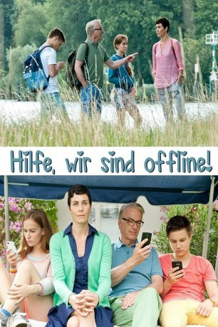

#10925 Ich bin dann mal Offline
Alternativ: Hilfe, wir sind offline! (Englischer Titel)
 
 IMDB-Wertung: 5.6 / 10
IMDB-Wertung: 5.6 / 10  Metascore: 0
Metascore: 0 
Heike ist genervt, dass ihr Gatte Klaus und ihre beiden Kinder sich von Smartphones und Computern 24 Stunden am Tag abhängig machen. Nicht nur das Familienleben leidet, auch das Konto wird von Onlinediensten geplündert. Kurzerhand kassiert sie die Hardware und den Internet-Router ein und verbannt alles unter großem Protest der Familie für einen Monat lang im Heizungskeller. Unter diesen Umständen wird sich schon bald wieder ein „normales“ Familienleben einstellen, wenn auch das Konto dadurch nicht wieder gefüllt wird. Den Umfang ihrer Aktion bekommt Heike dann aber selbst zu spüren. Nix mehr mit schnellen Nachrichten von Smartphone zu Smartphone, die Kinder verlieren ihre sozialen Kontakte und müssen anderweitig beschäftigt werden. Erst als Klaus seinen Job verliert, weil er nicht mehr ständig erreichbar ist, lenkt Heike ein. Doch der Erfolg ist nicht ausgeblieben: am Rande von Berlin ist eine Art „gallisches Dorf“ entstanden – auch die Nachbarn gehen offline.
Jahr: 2016
Dauer: 87 Minuten
FSK:
Land: Deutschland Studio: ZDFTonspuren:
Untertitel:
Auflösung: 720p (1280x718) Größe: 2816 MB
Genre: Komödie
Regisseur: Ingo Rasper
Drehbuch: Martin Rauhaus
Soundtrack: Martin Probst
Darsteller:
- Christoph M. Ohrt als Klaus
 Florian Kleine als Nachbar 1
Florian Kleine als Nachbar 1- Bettina Stucky als Doris
- Nina Kunzendorf als Heike
- Tara Fischer als Marie
- Ludwig Skuras als Benny
- Tina Engel als Barbara
- Rudolf Kowalski als Bernd
- Michaela Casper als Frau Mertens
- Matti Schmidt-Schaller als Tom
- Moritz Berg als Ralf
- Knut Berger als Alex
- Emilia Bernsdorf als Nina
- Aaron Hitz als Käufer
- Levin Liam als Kevin
- Jason Maass als Julian
- Gina Samuel als Jessie
- Anna-Lena Schwing als Chantal
- Stephanie Stremler als Reporterin
 Patrick von Blume als Radiomoderator
Patrick von Blume als Radiomoderator- Arne Wichert als
Datei: X:\2016(G-M)\Ich bin dann mal Offline (2016, FSK, 1280x718).mkv seit 04.04.2019
Festplatte: HD 2016(A-Z)
 Es gibt insgesamt 164 Filme in der Gruppe '2016(G-M)'
Es gibt insgesamt 164 Filme in der Gruppe '2016(G-M)'